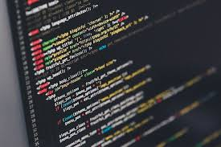

Lenguajes populares
- Python
- Java
- JavaScript

Ejemplo de código: console.log("Hola Mundo");
¿Qué es un lenguaje de programación?
En informática, se conoce como lenguaje de programación a un programa destinado a la construcción de otros programas informáticos. Su nombre se debe a que comprende un lenguaje formal que está diseñado para organizar algoritmos y procesos lógicos que serán luego llevados a cabo por un ordenador o sistema informático, permitiendo controlar así su comportamiento físico, lógico y su comunicación con el usuario humano.
Dicho lenguaje está compuesto por símbolos y reglas sintácticas y semánticas, expresadas en forma de instrucciones y relaciones lógicas, mediante las cuales se construye el código fuente de una aplicación o pieza de software determinado. Así, puede llamarse también lenguaje de programación al resultado final de estos procesos creativos.
para tener una idea de la programacion aqui esta un ejemplo de codigo :